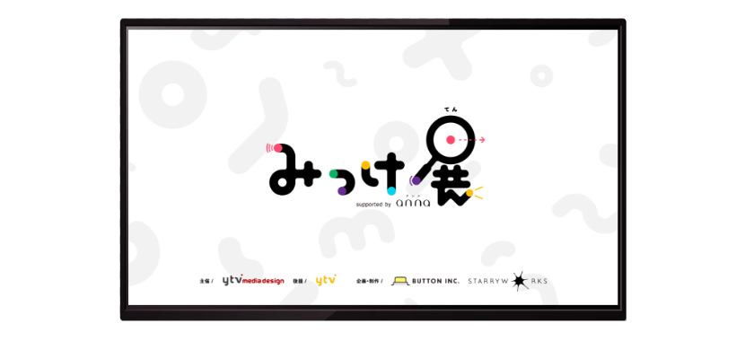

みっけ展
Logo animation / TVCM
After Effects / Premiere Pro
2023 08
『子供向けイベント みっけ展 ロゴモーション / TVCM』
開催日時 2022.12.9 - 11
会場 読売テレビ本社1F
イベント会場、各コンテンツでの使用
読売テレビでのCM放送 2022/12/11まで2週間程度
イベント会場やWebなどの各コンテンツにて使用される
ロゴモーションの作成。
子供向けらしいキャッチーさを表現するため、思わず目で追ってしまうような見ていて楽しい動きにこだわりました。
CM映像は、15秒という制限の中で楽しく正確に情報を
伝えるということに拘りました。